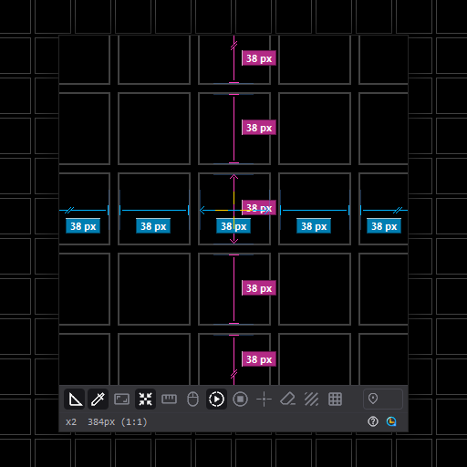
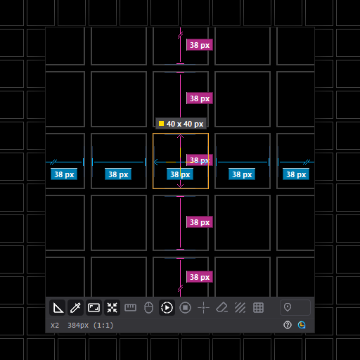
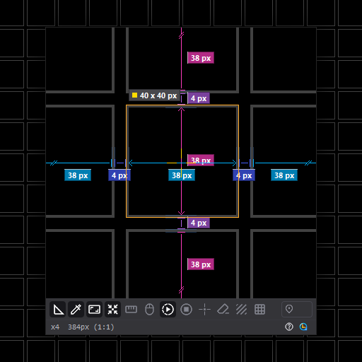
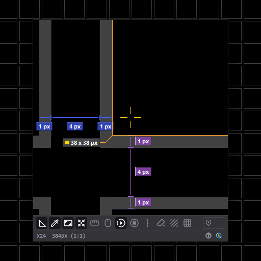
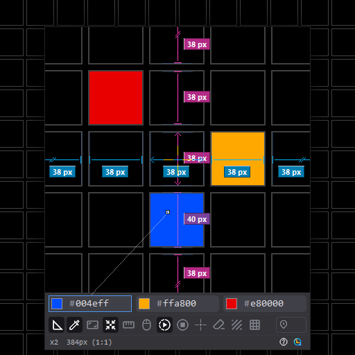

Windows 화면 실시간 측정 유틸리티 - 매직 루페 Real-time screen measurement utility for Windows
MagicLoupe MagicLoupe





매직 루페는MagicLoupe is
Windows 화면의 모든 것을 정밀하게 확인하고 측정해 주는 생산성 도구입니다. A productivity tool that inspects and measures everything on your Windows screen, precisely.
- 웹/앱 UI 등 데스크톱 환경의 디자인에서 간격, 크기, 색상 검수 Review gaps, sizes and colors in web and app UIs and other desktop designs
- AI 대화에 측정된 화면을 바로 붙여 넣어 빠르고 정확한 피드백 전달 및 수정 요청 Paste the measured screen straight into an AI chat for fast, precise feedback and change requests
- 다양한 편의 기능으로 개발/디자인 작업의 효율성 증대 Work faster on development and design with a range of convenience features
주요 특징Key features
실시간 확대Live magnification
화면을 실시간으로 최대 24배까지 보간 없이 확대 Magnifies the screen live, up to 24x, with no smoothing
실시간 자동 간격 측정Real-time automatic gap measurement
렌즈 안 요소 사이의 간격을 자동으로 찾아 픽셀 단위로 표시 Finds the gaps between elements in the lens and labels them in pixels
실시간 자동 크기 측정Real-time automatic size measurement
십자선이 놓인 요소의 가로·세로 크기를 측정 Measures the width and height of the element under the crosshair
컬러 피커Color picker
렌즈를 클릭해 색을 추출, RGB, #코드, 코드값 중 원하는 형식으로 클립보드에 복사 Click the lens to pick a color, then copy it as RGB, a # code or the bare code
측정/제외 영역 지정 도구Measure and exclude areas
Shift 드래그로 측정 범위를, Alt 드래그로 측정에서 제외할 영역을 지정 Shift-drag to set the measuring area, Alt-drag to leave an area out
사용자 지정 마스크Custom masks
원하는 형태로 마스크를 그리고 마스크 간의 간격 및 크기, 둘러싼 공간을 지정하고 측정 Draw masks in any shape, then set and measure the gaps and sizes between them and the space around them
오버레이 필터Overlay filters
그린, 레드, 모노, 다크, 라이트 필터를 적용, 복잡한 화면에서도 측정값을 쉽게 파악 가능 Apply a green, red, mono, dark or light filter to read measurements easily on a busy screen
간격 합산Gap sum
간격을 각각 클릭으로 합쳐 볼 수 있음 Click gaps one by one to add them together
눈금 자 가이드라인, 그리드Ruler guides and grid
눈금 자에서 가이드라인을 꺼내 요소에 맞추고 사용, 그리드 표시 및 스냅/해제 Pull guides out of the rulers and line them up with elements, show the grid and snap to it or not
적용 기술Technology
- 투영 프로파일 기반 실시간 경계 검출 엔진, 매 프레임 가로·세로 전 구간 분석 Real-time edge detection engine built on projection profiles, analysing every horizontal and vertical span each frame
- 평균 단차(Mean Step)와 픽셀 변화량(Edge Energy), 두 가지 경계 판정 알고리즘 탑재 Two edge detection algorithms on board: Mean Step and Edge Energy
- 경계 단차 임계값(tm)과 활동량 임계값(ta)을 실측 화면 데이터셋 회귀 검증으로 최적화 Edge step (tm) and activity (ta) thresholds tuned by regression testing against a dataset of real screens
- OCR 텍스트 인식, 프레임 간 모션 감지, 텍스처 분석을 결합한 노이즈 영역 자동 제외 Automatic noise exclusion combining OCR text recognition, inter-frame motion detection and texture analysis
- vblank 동기 캡처 파이프라인, 타이머 없는 이벤트 구동 방식으로 대기 시 CPU 사용 없음 vblank-synchronised capture pipeline, event-driven with no timers and no CPU use while idle
- 측정 오버레이와 분리된 원본 프레임 버퍼에서 픽셀 단위 색상 샘플링 Pixel-exact color sampling from a raw frame buffer kept apart from the measurement overlay
- Per-Monitor V2 DPI 대응, 물리 픽셀 좌표계 기반 다중 모니터 정밀 측정 Per-Monitor V2 DPI aware, with precise multi-monitor measurement in physical pixel coordinates